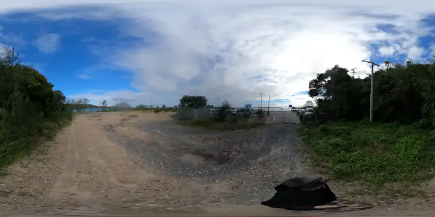

TMR project page
Project overview, funding, key features, current status and contact pathway.
Dunwich (Gumpi) Ferry Terminal UpgradeThis page records the official sources, local source documents, photo intake, tool docs and reciprocal project links used to build the lab.

Project overview, funding, key features, current status and contact pathway.
Dunwich (Gumpi) Ferry Terminal UpgradeConsultation page, online survey pathway, information sessions and concept-design material.
Your Say consultationQueensland Government release announcing the concept design and consultation.
Media statement PDFPlanning context for the township and Junner Street ferry terminal upgrade aspirations.
Master Plan PDFCommunity feedback themes and how ferry terminal comments were addressed in the master plan.
Consultation summary PDFQSpatial, Queensland Open Data and ELVIS routes for elevation, spatial and point-cloud discovery.
Open data ladderThese files are not published in full on the website. They informed the public-facing framing around co-op governance, multicultural grants, sports/cultural hub ideas, public funding and capability transfer.
Community-hour, braided economy, regenerative asset and local government operating-system themes.
Multicultural hub, sandy sports, digital custodian and maker-space construction themes.
Ready S.E.T. Co-op, support ecosystem, kiosks, digital twin and legal workbench themes.
Distributed sand sports, 10-12 Ballow Road, resilience, material sovereignty and 2032 legacy themes.
Original full-size images remain in the local folder Dunwich Ferry Terminal. This repo includes smaller, EXIF-stripped WebP derivatives and a manifest.
Photo manifestThe MP4 turns the open-data ask into a chorus people can remember.
Open song pageWorld generation from text, image, multiple images, panorama, video and 3D structures.
Open MarbleText-to-3D and image-to-3D asset generation for prototype objects and scene parts.
Open MeshyOpen 3D creation workbench for review scenes, assets, meshes and exports.
Open BlenderPhone-based 3D scanning, gaussian splats and meshes.
Open Niantic SpatialCross-platform 3D scanning, floor plans, photogrammetry and drone mapping.
Open PolycamPhotogrammetry and laser scan workflow entrypoint.
RealityScan